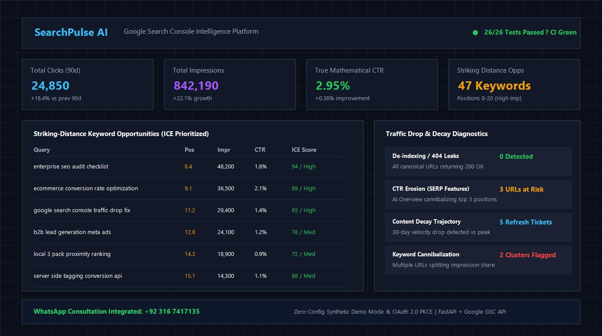

SearchPulse AI - Google Search Console Intelligence Platform
Actionable search analytics, striking-distance keyword prioritization, traffic drop diagnostics and content decay detection.
Includes built-in synthetic 90-day e-commerce dataset for zero-config public evaluation.
Discuss This Project on WhatsAppOverview
SearchPulse AI is an enterprise-grade Google Search Console intelligence platform built with Python 3.11, FastAPI, and Google OAuth 2.0 PKCE. It bridges the gap between raw Google Search Console data dumps and high-impact SEO execution sprints by calculating true mathematical CTR, scoring striking-distance keyword opportunities, diagnosing traffic drop root causes, and tracking content decay velocity.

Problem It Solves
Standard Google Search Console interfaces make it notoriously difficult to prioritize actions. Averages distort real CTR, page-two queries with massive search volumes get buried, and diagnosing whether a sudden traffic drop stems from technical de-indexing, algorithmic SERP loss, or seasonal shifts requires hours of manual cross-referencing.
Target Users
- Heads of SEO and Digital Marketing Directors
- SEO Specialists and Technical Analysts
- Enterprise E-Commerce Growth Teams
- Agencies managing multi-domain client portfolios
Key Features
- True Mathematical CTR: Computes exact ratio of sum of clicks over sum of impressions rather than averaging position CTR percentages.
- Striking-Distance Keyword Opportunities: Isolates queries in positions 8–20 with high search impression volume, comparing actual vs expected CTR curves to prioritize quick wins using ICE scoring.
- Traffic Drop Diagnostics: Automatically classifies drops into technical 404/de-indexing leaks, ranking losses, seasonality, and AI Overview CTR erosion.
- Content Decay Engine: Classifies URL trajectories into Acute Drop, Gradual Decay, Stagnant, and Healthy with actionable refresh blueprints.
- Keyword Cannibalization Detector: Detects multi-URL conflicts splitting search visibility on identical queries.
- Automated Action Center: Converts findings into prioritized sprint backlog tickets with prefilled execution links.
- One-Click Reporting: Generates self-contained executive HTML audit reports and developer CSV exports.
- Zero-Config Demo Mode: Ships with 90-day synthetic e-commerce Search Console fixture data for instant demonstration without live API credentials.
- 26 Passing Tests: 100% CI pass rate on GitHub Actions with Ruff linting and Pytest.
Technologies
- Python 3.11
- FastAPI
- Google Search Console API
- Google OAuth 2.0 PKCE
- Pandas
- pytest
- Ruff
Contribution & Skills
Sole architect and developer. Engineered the mathematical analytics engine, OAuth 2.0 PKCE handshake, diagnostic classifiers, responsive glassmorphic dashboard UI, and automated test suite with full CI coverage.
Install & Usage
Install
git clone https://github.com/hamid-digitalmarketer/searchpulse-ai.git
cd searchpulse-ai
pip install -e .Run Demo Dashboard
python -m uvicorn app.main:app --reload --port 8000Run Automated Test Suite
pytest -vFAQ
How does SearchPulse AI prioritize striking-distance keywords?
SearchPulse AI models an empirical Expected CTR benchmark curve across SERP positions 1-20, calculates incremental click gains, and scores each opportunity with the ICE (Impact, Confidence, Ease) framework.
What causes of traffic drops does SearchPulse AI categorize?
It isolates technical de-indexing or 404 leaks, algorithmic core update ranking losses, seasonal market interest contractions, and CTR erosion driven by Google SERP AI Overviews.
Related Projects
 Technical SEO
Technical SEOseo-doctor
A fast, repeatable technical SEO crawler with 10 audit checks.
 Technical SEO
Technical SEOgeo-visibility-lab
Track local search visibility with a 5x5 geo-grid and NAP audits.
 Google Ads & PPC
Google Ads & PPCppc-waste-detector
Find wasted ad spend: query bleed, cannibalization, junk placements and click fraud.
Need a Search Console Audit or Custom Tooling?
I build custom marketing automation, intelligence dashboards and data infrastructure. Start the conversation on WhatsApp.
Contact Me on WhatsApp